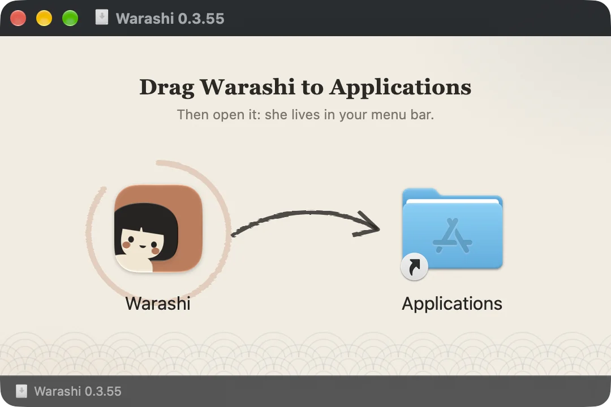
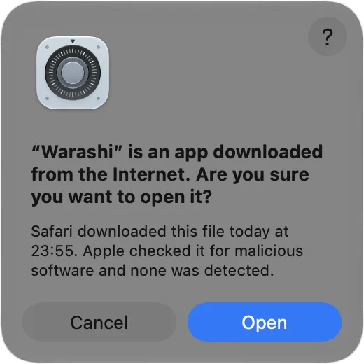
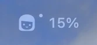

Installeren duurt ongeveer een minuut. Je hebt een Mac met Apple silicon (M1 of nieuwer) en macOS 26 of nieuwer nodig. Weet je het niet zeker? Kies Apple-menu › Over deze Mac: daar staan de chip en de macOS-versie.
- Download Warashi
Klik bovenaan een pagina op warashi.app op Download. Je browser bewaart
Warashi.dmg, meestal in je map Downloads. Het is ongeveer 15 MB. - Open de schijfkopie
Dubbelklik op
Warashi.dmgin Downloads (of klik erop in de downloadlijst van je browser). Er opent een venster met Warashi en je map Programma's.
De schijfkopie: sleep het geestje naar Programma's. - Sleep Warashi naar Programma's
Sleep het pictogram Warashi naar de map Programma's. Is het kopiëren klaar, dan kun je het venster sluiten en de schijfkopie uitwerpen (de knop ⏏ naast “Warashi” in de navigatiekolom van Finder).
- Open Warashi
Open je map Programma's en dubbelklik op Warashi. Omdat hij van internet komt, vraagt macOS één keer of hij mag openen. Warashi is ondertekend en door Apple gecontroleerd, dus klik op Open.

macOS vraagt het één keer. Apple heeft Warashi gecontroleerd, dus je kunt veilig op Open klikken. - Volg de welkomstrondleiding
De welkomstrondleiding opent. Elk kort hoofdstuk toont een onderdeel, laat je het proberen en vraagt meteen om de toestemming die het nodig heeft: zie De welkomstrondleiding.
- Vind het geestje in je menubalk
Warashi woont in de menubalk rechtsboven op je scherm: een klein geestje met één live getal ernaast. Klik er op elk moment op.

Het geestje en één getal, hier de CPU.
Als er iets niet klopt
- “Warashi kan niet worden geopend” of de app is beschadigd: download hem opnieuw van warashi.app en open de nieuwe kopie. Download Warashi alleen van warashi.app.
- Je Mac zegt dat het niet wordt ondersteund: Warashi heeft Apple silicon en macOS 26 nodig. Intel-Macs worden niet ondersteund.
- Je ziet het geestje niet: een drukke menubalk kan het achter de inkeping verbergen. Zie Ik zie Warashi niet in de menubalk.
Meer in Problemen oplossen, of mail adam@warashi.app.